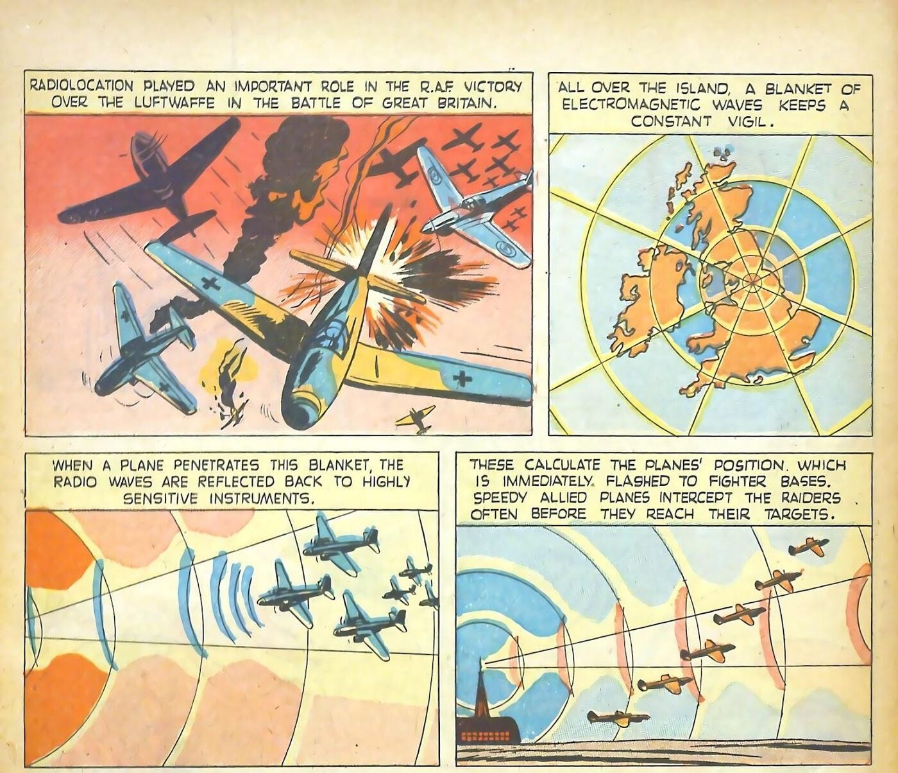

You're the fact-checker. For each part: read the comic on the left → get both checks right. Done = 8 green checks, then turn in at the bottom.
- RAF = Britain's air force
- Luftwaffe = Germany's air force
- Radar (or radiolocation) = radio waves that find planes
- Intercept = cut off, catch
- Vessels = ships
- Codebreaker = reads the enemy's secret messages
Content note: These pages show battles and the atomic bomb. The 1943 Midway page used a hateful slur for Japanese people, common in U.S. wartime comics. We covered it with a slur tag.

Click the page to make it bigger.
Turn in your work
Your work saves on this device, so you can come back later. Your teacher sees it after you turn it in.
Comics: "Radar: Wonder Weapon," True Comics #28 (Oct. 1943); "Admiral Nimitz," Real Heroes #8 (Jan. 1943); quiz page, True Comics #63 (Aug. 1947); "Atoms Unleashed," True Comics #47 (Mar. 1946). Parents' Magazine Press. Public-domain scans from the ComicBook Experience reading library. Panels were cropped to today's reading.